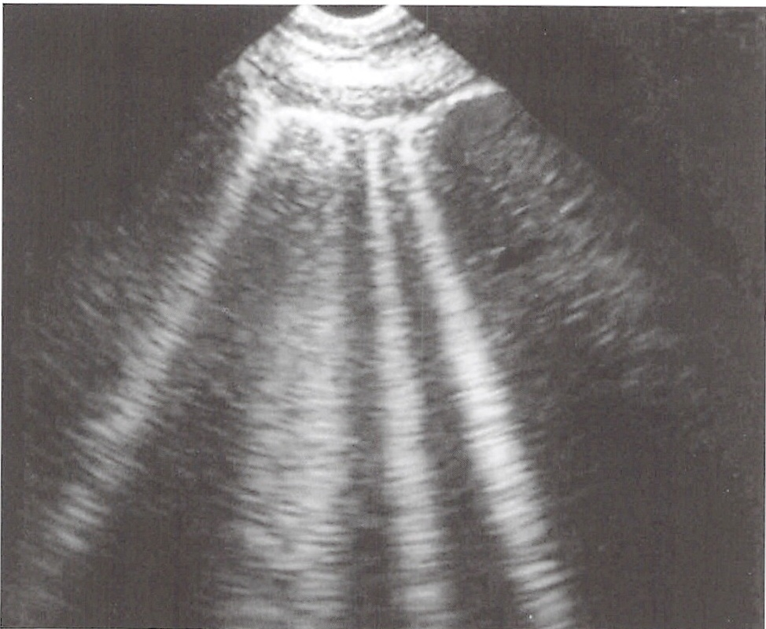
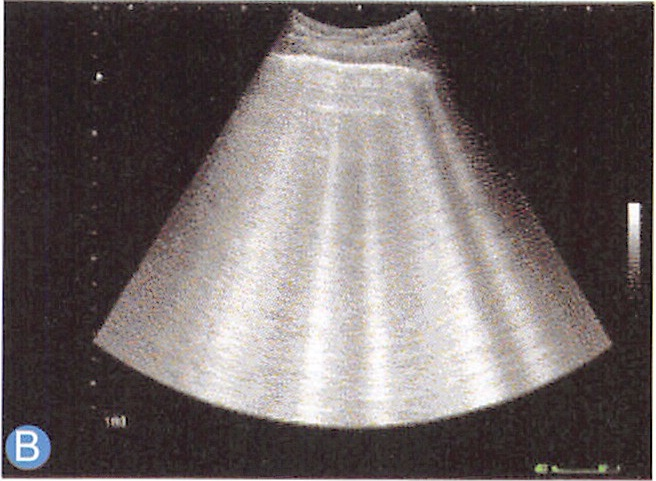
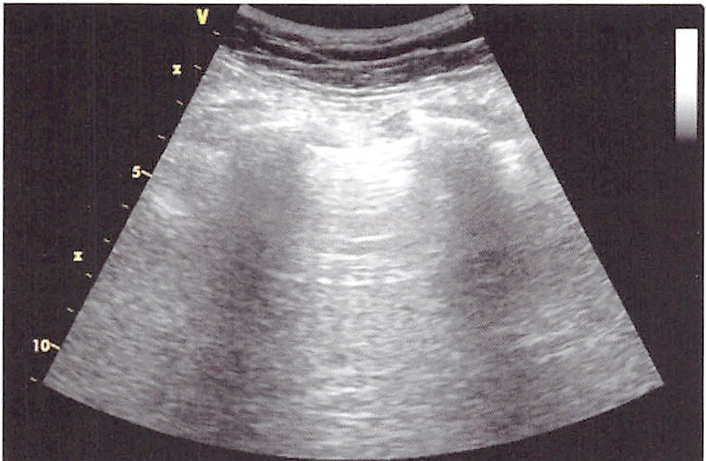
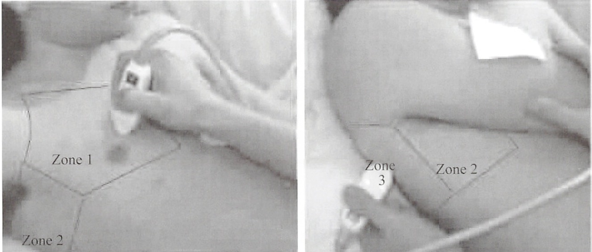
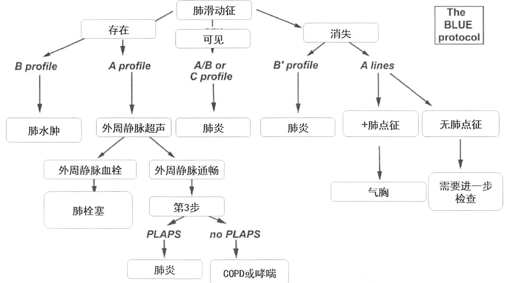

01 · Foundation
肺部超声基础
长期以来，超声被认为不适用于肺部检查——因为超声不能穿过肺-软组织界面。但法国医生 Daniel Lichtenstein 系统研究了超声与 CT 的对比，彻底改变了这一认知。
胸膜肺界面强回声及与其平行的多重反射强回声线。在正常状况下可清晰显示。
与A线垂直的条带样强回声，也叫胸膜彗尾线。B线增多（>3条/肋间）与肺间质综合征相关。
诊断要求：起自胸膜线、激光样、长而无衰减、遮挡A线床旁超声已成为急诊室和 ICU 的必备检查手段。


02 · Pleural Effusion
四边形征 Quad Sign
胸腔积液（pleural effusion）将胸膜线与肺表面分离，与上下肋骨的声影一起构成四边形的形状。
诊断要求：肋间扫查见胸膜线与肺表面被无回声/低回声区分离，形成四边形无论积液有回声（积血、积脓等）还是无回声，"四边形征"可以作为各种胸腔积液的特征性征象。
图3-1 箭头显示胸膜线与肺表面之间的无回声积液区，上下肋骨声影形成四边形的两侧边界。

04 · Consolidation
实性组织征 Tissue-like Sign
含气的肺泡被渗出液填充后呈现类肝实质或脾实质的实性组织样回声。
诊断要求：肺实变区域回声类似肝/脾实质，可见支气管分支是肺实变（consolidation）的一种主要超声征象。当肺实变范围较大时尤为明显。
需注意与肝/脾实质对比，同时观察是否存在"空气支气管征"以确认肺实变诊断。

06 · B-line / Lung Rockets
B线与肺火箭征 Lung Rockets Sign


多重反射伪像
非胸膜外
边界锐利
亮度高
直达屏幕边缘
A线不可见
实时动态观察
>3条B线/视野
提示：肺间质综合征
前胸部上下左右4区均阳性
提示：肺水肿（心源性/感染性）
07 · Air Bronchogram
超声空气支气管征 Ultrasound Air Bronchogram


实变肺内出现点状或线状强回声，代表含气的支气管/细支气管，与实变肺组织形成对比。
诊断：实变肺内见点/线状强回声气体强回声随呼吸出现离心性改变，变化距离 > 1mm 为阳性。
可在实时超声或M型超声下观察
空气支气管征 + 动态空气支气管征均阳性
无动态空气支气管征 → 需考虑中央型占位
08 · Alveolar-Interstitial Syndrome
肺泡-间质综合征的超声诊断
肺泡-间质综合征是急诊和监护病房常见的临床状况。床旁超声检查能够在很大程度上提示肺泡-间质综合征，提示间质增厚水肿的程度，而且方便易行。
① B线增多（>3条/肋间）
② 肺火箭征阳性
③ 超声比X线更灵敏地提示早期亚临床肺水肿
床旁胸部X线片由于受到技术条件限制，常不能满足临床需要。床旁超声已成为急诊室和监护病房的必备检查手段。


正常肺 vs 间质性肺炎的超声对比
09 · Quantification
胸腔积液量的估计


E = (LH+SH) × 70
LH=侧壁高度 · SH=肺下高度 · r=0.87
PLD > 5cm → > 500ml (Sen 83% · Sp 90%)
PLD = 20mm → ~380ml · 40mm → ~1000ml
公式：E(ml)=20×sep(mm) · r=0.72
10 · Pneumothorax
气胸的超声诊断
平卧位X线灵敏度仅36%~48%。CT是金标准但不便携。
床旁超声已成为首诊影像学方法，灵敏度/特异度极高。
① 缺乏"胸膜滑动征"
壁层胸膜呼吸时相对滑动消失
② 缺乏"彗星尾征"
正常每肋间1-2条的彗星尾伪像消失
M型可清晰显示胸膜滑动有无。
正常 → 海岸沙滩征
气胸 → 平流层征


11 · BLUE Protocol
BLUE 协议 Bedside Lung Ultrasound in Emergency



5种病因判定覆盖97%病例
肺水肿 COPD/哮喘 肺栓塞 气胸 肺炎
①肺滑动征 ②A线 ③B profile（弥漫B线+肺滑动）④A profile（A线+肺滑动）⑤AB/C profile ⑥B' profile（B线+无滑动）⑦肺点征